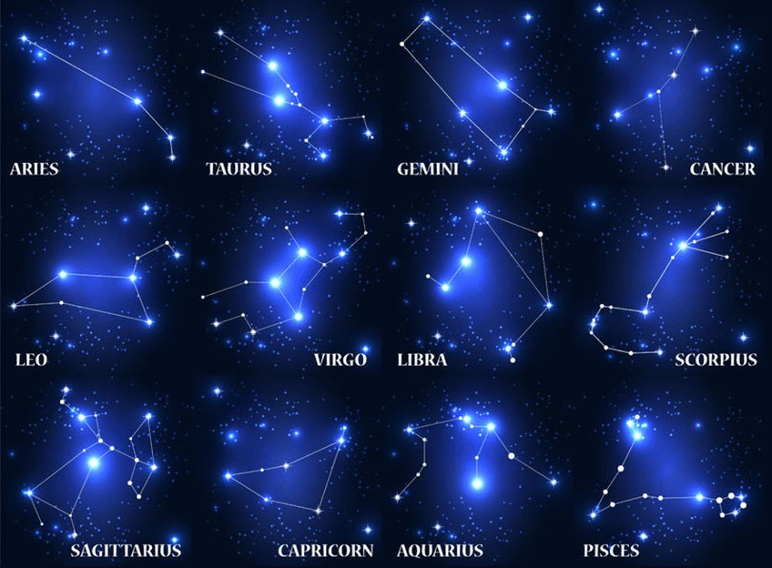

調查戀人彼此星座的問卷
不論過去或是現在，您是否有著心儀的他/她?
假如您對於星座十分
熟悉
可直接往下作答
倘若您想重新了解，可藉由以下的圖連結至對應說明唷(源：占星之門)

您的名字：
對方的名字：
您的性別：
男
女
對方的性別：
男
女
沒錯!性別就是要分開勾
您的興趣：
看書
看電影
運動
電玩
化妝
寫程式
對方的興趣：
看書
看電影
運動
電玩
化妝
寫程式
您的星座：
牡羊座
金牛座
雙子座
巨蟹座
獅子座
處女座
天秤座
天蠍座
射手座
摩羯座
水瓶座
雙魚座
對方的星座：
牡羊座
金牛座
雙子座
巨蟹座
獅子座
處女座
天秤座
天蠍座
射手座
摩羯座
水瓶座
雙魚座
您認為的匹配指數 0~100：
50
交卷啦